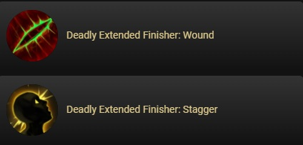
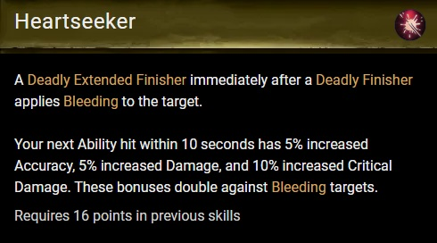
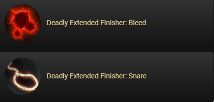
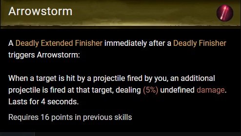

Introduction
This guide isn't a wiki. I won't be explaining each individual Ranger ability since individually each ability is rather simple. This will be more of a focus on the possible ability combinations and an explanation of the more vague abilities like weapon combo's and finishers that are beneficial to a PVE scenario.
Combat Strategies
Weapon Choices
You have two options as a Ranger Longbow or Shortbow.
The weapon combo finishers are applied by a sequence of auto attacks and these finisher abilities vary based on the weapon you are using.
Longbow
 Shortbow
 These are the unique finishers that each bow provides.
- Longbow Finishers:
- Wound: Applies a debuff to decrease healing by 5%. This stacks 10 times for a maximum of 50% healing reduction.
- Stagger: Applies staggered to your target, which reduces their evasion by 25% for 6 seconds. Subsequent applications extend the duration up to 15 seconds.
- Shortbow Finishers:
- Bleed: Applies a bleed that deals 15% of your physical power every second for 6 seconds.
- Snare: Applies a movement speed debuff that reduces movement speed by 25% per stack (Can trigger diminishing returns which makes the target immune for 10 seconds to CC).
Longbow Pros and Cons
Pros
Single Target
This subsection focuses on maximizing damage to a single target. These strategies and abilities are particularly effective in boss fights or against high-priority enemies.